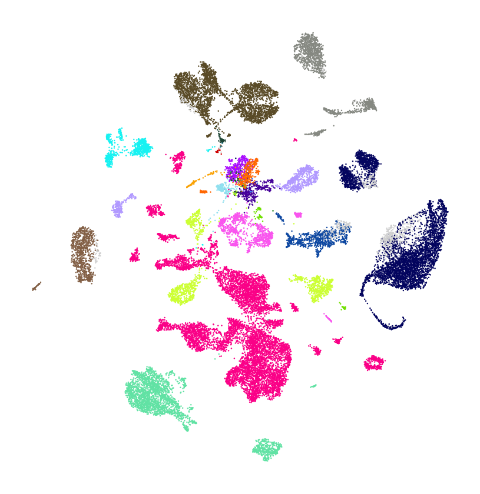

The data · reference
Reference: the Allen whole-brain scRNA-seq atlas
Data
SpaGE
Tangram
cell2location
Compare

Reference subset (UMAP) in the class colours of the spatial map; grey = no label
The full atlas: about 7 million cells profiled, 4.0 million after QC, 10x v2, v3 and multiome. Its taxonomy has four levels:
bar length on a log scale
28,981
cells in our subset
The full object is about 280 GB, so the practical uses a pre-made subset.
Yao et al., Nature 2023 (cell numbers, taxonomy). Subset and 280 GB: Practical 5 text. UMAP computed here (3,000 HVGs, PCA, scanpy defaults).